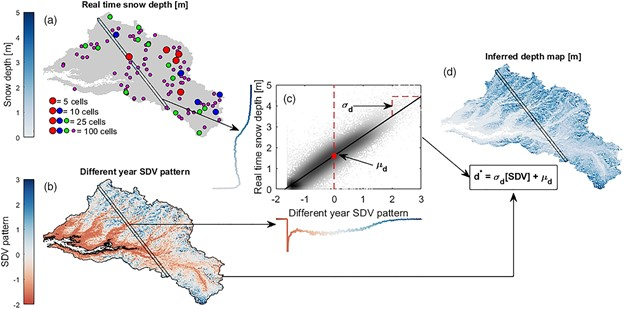

Mapping Orographic Precipitation and Rain vs Snow
Working to improve flood prediction in maritime mountain ranges
The North Fork (NF) of the American River Basin, California, has been selected as NOAA's Hydrometeorological Testbed (HMT), where NOAA's top radar meteorologists are working with the Sacramento River Forecasting Center on river forecasting issues associated with western mountain watersheds. HMT focuses on intensive measurement and modeling of the meteorological characteristics of land-falling storms.
Our work:
- Graduate student Mark Raleigh and Assistant Professor Jessica Lundquist provide the link between the meteorology and hydrology, monitoring stream stage at 4 subbasins and analyzing how mixed rain and snow events affect runoff.
- Our paper on using radar brightband measurements to identify the dividing line between rain and snow [Lundquist et al. 2008] has been selected as a paper of note by both NOAA and the National Weather Service because of its potential for improving forecasts and was recently awarded the "Most useful, relevant, and interesting paper of the year award" by the California Department of Water Resources and the California State Climatologist.
- Another paper investigating how atmospheric rivers, plumes of concentrated tropical moisture intersecting the Pacific coastline, affect precipitation, [Neiman et al. 2008], was selected to win the NOAA 2009 Outstanding Scientific Paper Award for contributions to forecasting.


- To better understand snow accumulation and melt in areas that are hard to measure by conventional means, such as in the Grand Canyon of the American River, we have devised a way to use small temperature sensors buried just below the soil's surface to determine the dates that snow appears and disappears [Lundquist and Lott 2008].
- Mark Raleigh has extended this technique by using the snow disappearance date to determine how much snow originally fell at a location. He has checked this technique against over 100 snow pillow measurements in the western United States and presented his results in a poster at the 2008 and 2009 Fall AGU meetings and now has a paper in review.
- We hope to use this technique to examine stability and variations in precipitation distributions in regions without any precipitation gages. A recent paper [Lundquist et al. 2010] demonstrated that interannual variations in orographic precipitation patterns in the Northern Sierra are not well-represented by either PRISM maps or a linear model of orographic precipitation. Rather, precipitation patterns are strongly influenced by the height of Sierra barrier jet, with flows parallel to the range. Distributed measurements are essential to better understand this complex process.